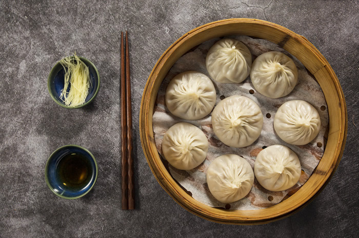

| 无锡小笼包 |  |
历史渊源无锡小笼包的历史可以追溯到清代同治、光绪年间，最早由无锡南门外的“吴苑点心店”创制。随着时间的推移，这种小巧玲珑的点心逐渐在当地流行开来，并在民国时期迎来了发展的黄金阶段，许多老字号如“拱北楼”、“王兴记”等凭借精湛的制作技艺和独特的口味，使小笼包声名远扬。 制作工艺无锡小笼包的制作工艺独特，面皮采用不发酵的精面粉擀制，使得面皮既薄又韧，蒸熟后透明如纸，能隐约看见粉红的肉馅。馅料通常选用上好的夹心腿肉，拌入精心熬制的肉皮冻，秋冬季节还会特别加入熬熟的蟹黄油，制成令人垂涎的蟹粉小笼。 风味特色无锡小笼包以“夹起不破皮，翻身不漏底，一吮满口卤，味鲜不油腻”的特色而著称。其肉馅中加入了少许白糖，使得口味在咸鲜的基础上多了一丝甜蜜，甜而不腻，与肉香完美融合。 文化意义无锡小笼包不仅是一道美食，更是江南饮食文化的生动写照，承载着无锡人对家乡的深厚情感。它在当地的饮食文化中占据着重要地位，成为无锡人日常生活中不可或缺的一部分。 |
|
下一篇：无锡酱排骨 |
返回 |